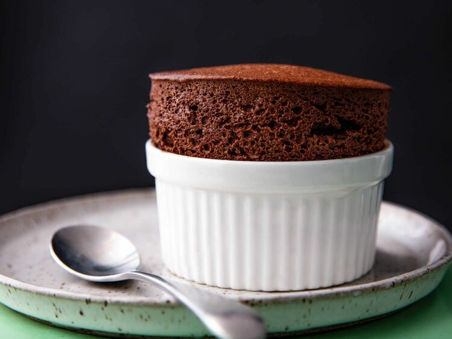

Chocolate souffle

Description
Served à la minute, chocolate soufflé is the go-to
classic dessert for chocolate lovers everywhere.
Ingredients
- A Set of ramekins buttered and coated with sugar
- 2 1/2 ounces (about 1/4 cup; 70g) heavy cream and/or whole milk
- 1 3/4 ounces 68-71% dark chocolate, chopped (about 1/3 cup; 50g)
- 1 3/4 ounces unsweetened chocolate, chopped (about 1/3 cup; 50g)
- 1 3/4 ounces (1/2 cup; 50g) Dutch process cocoa powder
- 3 1/2 ounces (scant 1/2 cup; 100g) water
- 1 teaspoon vanilla extract /li>
- Whites from 8 large eggs, straight from the fridge (8 3/4 ounces; 250g)
- 3 1/2 ounces (1/2 cup; 100g) granulated sugar
- 3/4 teaspoon Diamond Crystal kosher salt; for table salt, use half as much by volume
Directions
- Preheat oven to 400°F (204°C) with the convection fan turned off and oven rack in center position. Liberally butter the interiors of eight 4-ounce ramekins, making sure to butter right up to the upper edge of the rim of each ramekin. Sugar the buttered insides evenly, tapping out excess, and set ramekins aside.
- Place 2 1/2 cups water in a 3-quart sauce pan on the stove over medium heat. In a large, heat-proof bowl that will sit comfortably on the pot without toppling over or touching the water below, combine cream and/or milk, dark chocolate, and unsweetened chocolate. Whisk gently until chocolate is melted, cream and/or milk are fully incorporated, and a smooth ganache has formed.
- Turn off heat, then carefully whisk in cocoa powder, water, and vanilla extract until smooth. Leave bowl atop pot of hot water, off the heat, to keep the ganache warm.
- In the bowl of a stand mixer fitted with the whisk attachment, beat egg whites on high speed until they become foamy, about 20 seconds. Reduce mixer speed to medium and gradually add sugar and salt, then return to high speed and whisk the egg white mixture until firm, glossy, smooth peaks form, about 2 minutes.
- Using a silicone spatula, stir about 1/4 of the egg whites into the chocolate ganache until thoroughly incorporated, to lighten it. Then gently but thoroughly fold in the remaining egg whites, taking care not to deflate the mixture, until no visible whites remain. As soon as there are no more unincorporated whites, spoon soufflé mixture into prepared ramekins just to the top, then even the tops with an offset spatula. (You may prepare soufflés up to this point, and bake later; see note.)
- Evenly space ramekins on a rimmed half-sheet tray and bake in the center of the oven for 12 minutes for soufflés that are wet on the inside, or 13 to 14 minutes for ones that are drier. The soufflés will have risen tall above the rims of the ramekins and look dry on top. Serve immediately.
Homepage